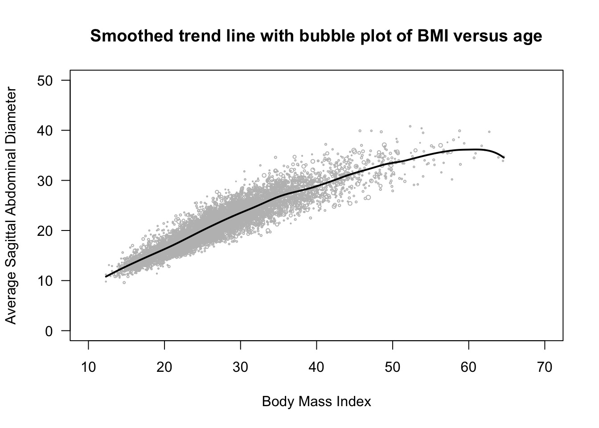

Business Analysis: Case Management Software Development
A retrospective study of a real-world implementation of a technology solution. Contains process flow diagrams, BRD, RTM, and other artifacts.
View Project
A retrospective study of a real-world implementation of a technology solution. Contains process flow diagrams, BRD, RTM, and other artifacts.
View Project
A project for my Sampling Theory and Practice class, where I'm analyzing NHANES health data, qualitatively analyzing sources of non-response, and implementing imputation for missing values.
View Project